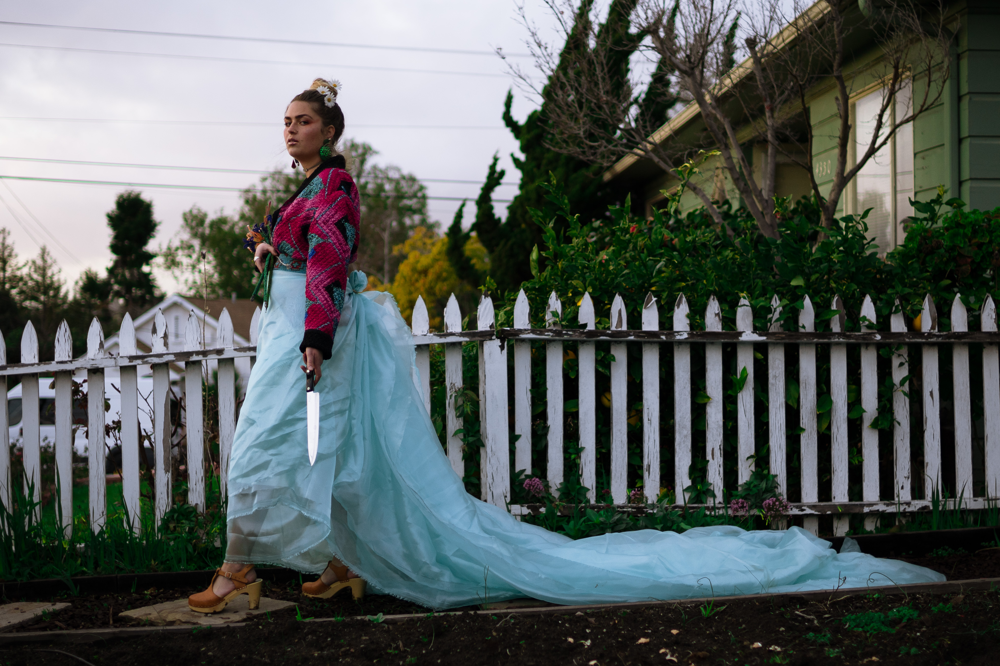

|
FAKE FLOWERS + FRACTURED FACADES:
|

|
APPROACHWe took inspiration from fairy tale princesses (i.e. Cinderella, Rapunzel, Bell), Midsommar, and The Stepford Wives. We aimed to portray the rage of a woman being squeezed by patriarchal society into gender roles by dressing her up in a fairytale ensemble and adding a knife to her bouquet of fake flowers to symbolize the ways she has been pushed into a violent psychological breakdown seeking revenge. We added glitter crumbs to her lips to symbolize toxic body-image issues by resembling her perceived audacity to eat the baked goods she made for her family. |
TAKEAWAYS“The importance and visibility of women’s collective anger can’t be overstated. This anger takes determination, thoughtfulness, and work. It means respecting our own anger and being willing to respect the anger of other women.” “I have lived with that anger, ignoring it, feeding upon it, learning to use it before it laid my visions to waste, for most of my life. Once I did it in silence, afraid of the weight. My fear of anger taught me nothing. Your fear of that anger will teach you nothing, also.” |
|
|  |
This series is accompanied by a poem I wrote amidst the Me, Too movement. |
MY ROLES |